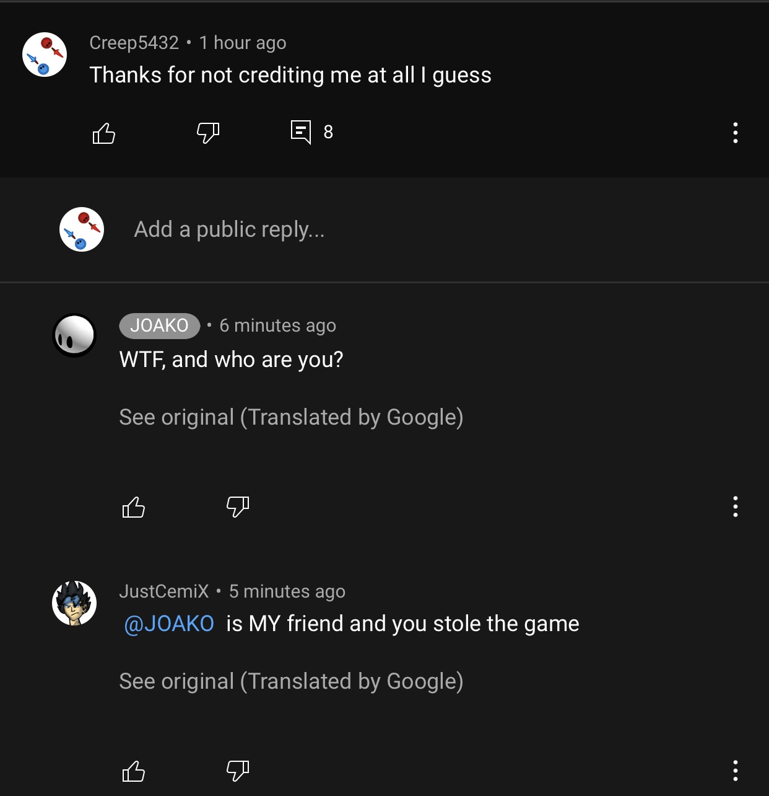
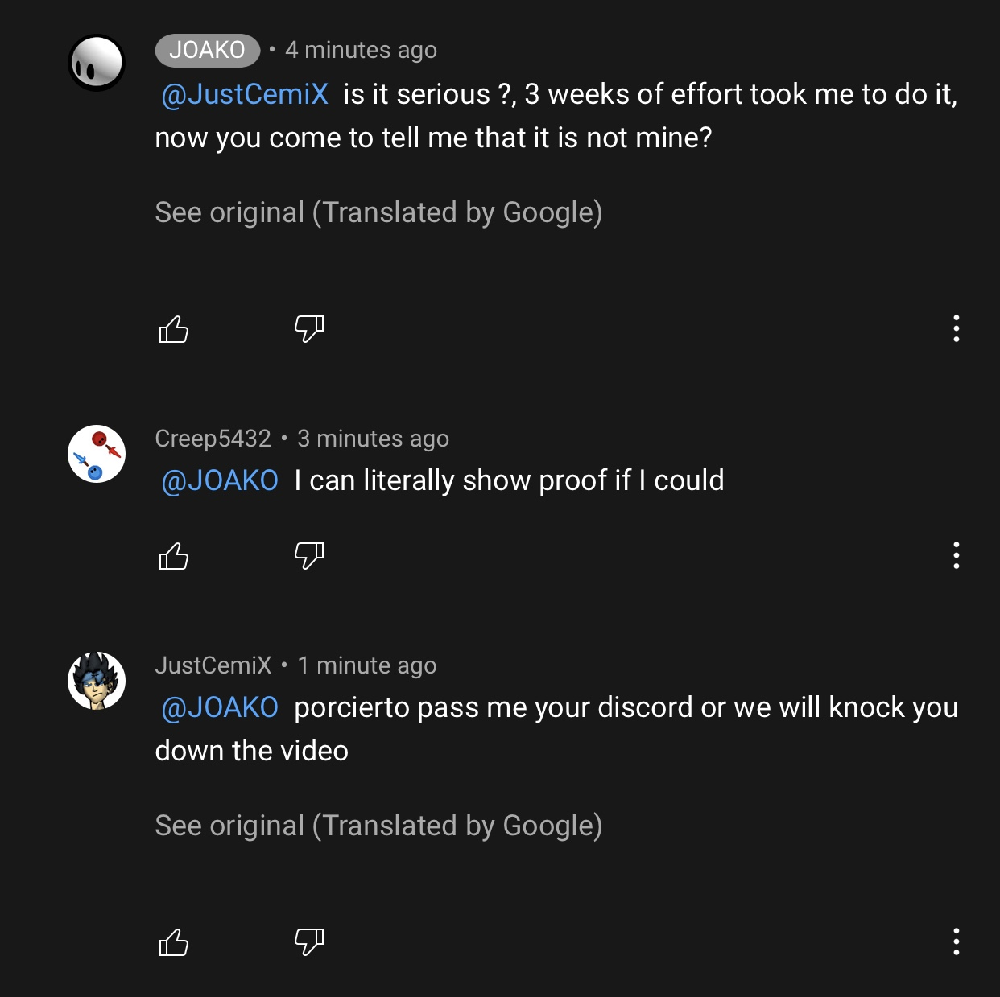
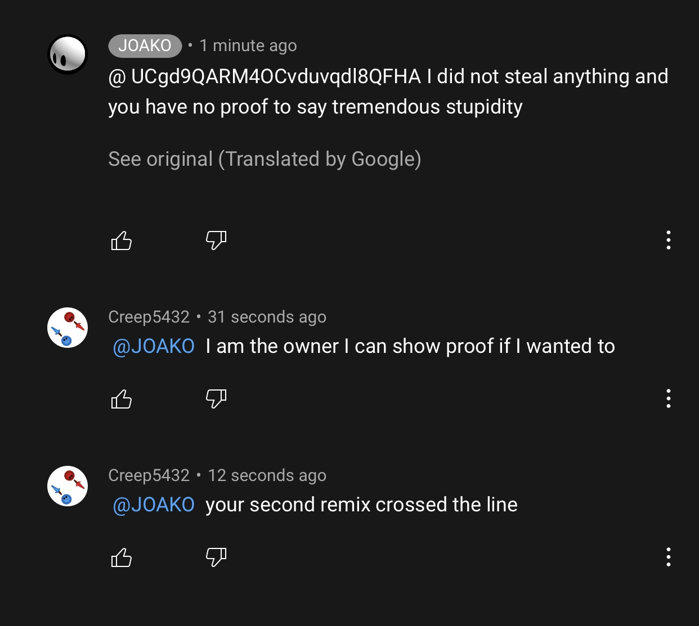

This is the story about the plagarizing problem.
After I have made Multiplayer Testing Grounds, I was really proud of it mainly because there was little Pocket Code projects that have accomplished this. I wanted to show everyone on the official Pocket Code discord server. Ever since I published Multiplayer Testing Grounds, I have met lots of people on it and inspired lots of people to make their own multiplayer games on Pocket Code. I thought that this would all be smooth sailing. (Of course not.) However this was the day I would somewhat regret making Multiplayer Testing Grounds.
A person named "JOAKO0990" has remixed my project. I just thought it was another stupid person that can't do anything on his own (OH BOY WAS I TOTALLY WRONG)
I didn't think much of it and was working on a graphical update. While I was working on it, I thought I should check the Catrobat community page. I noticed that I got a notification, so I checked the tab. (Oh boy...)
This loser remixed my project again. Though this time, he went all out. He added a button that took you to their YouTube channel (That's how I found his youtube channel and video lmao) AND EVEN MADE A FUCKING YOUTUBE VIDEO ABOUT IT. For real though, I can't believe how someone would steep this low for attention on the Pocket Code community. With the help of JustCemiX (Thanks for that if you're reading this) (He even made a mod for Multiplayer Testing Grounds, go check him out) We found the video, and interrogated him. (Luckly, I have more evidence that this happened. Here's the full YouTube argument) If the images are low-res for you, open the image in a new tab
 JESUS, didn't know it took more than 3 weeks to add a table lmao. And yes, I do have the proof to say such stupidity
I think he had a stroke while typing his reply
However sadly, he blocked me (so my comments don't show up on his videos) and blocked JustCemiX a few days later. Then about 2 weeks later, he sadly privated the crappy video so no one would suspect him (nice try btw, I now regret not downloading the video lol) And after all the people I told about this, he somehow got away scott free (mostly)
What JOAKO is doing: He moved on from that and can't decide whether or not to continue his YouTube journey (This is because he keeps privating his new videos) Edit: He quit YouTube lmao.